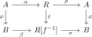
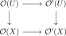
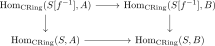

7.2. Geometries
Classical algebraic geometry is built from affine schemes, basic open immersions, and covers by basic opens. Lurie's notion of a geometry abstracts exactly this pattern; see [Lurie 2011]:
For the applications below, we will use the following slightly site-theoretic formulation.
Let \(C\) be a category with finite limits. An admissibility structure is a wide subcategory \(C^{\ad} \subseteq C\) of admissible morphisms satisfying the following properties:
\(C^{\ad}\) is closed under base change in \(C\);
\(C^{\ad}\) is left cancellable: given morphisms \(f\colon X \to Y\) and \(g\colon Y \to Z\), if \(g\) and \(gf\) are admissible morphisms, then so is \(f\);
admissible morphisms are closed under retracts.
Let \((C,C^{\ad})\) be a category with an admissibility structure. A topology \(\tau\) is said to be compatible with \(C^{\ad}\) if every \(\tau\)-covering sieve contains a \(\tau\)-covering sieve generated by admissible maps. We refer to such triples
as geometric sites. Covering families generated by admissible morphisms will be called admissible covers. If \(C\) is small and idempotent complete, we will also call such a triple a geometry.
7.2.1. Zariski geometries
The basic example is the classical Zariski geometry. Its underlying category is
where \(\CRing^{\mathrm{fp}}\) denotes the category of finitely presented ordinary commutative rings. Since \(\GZar^{\mathrm{cl}}\) is the opposite of a category of rings, we will describe its morphisms in terms of the corresponding maps of rings in the opposite direction.
The admissible morphisms in \(\GZar^{\mathrm{cl}}\) correspond to principal localizations
Geometrically, this is the inclusion of the principal open
A finite family
generates a covering sieve precisely when the elements \(f_i\) generate the unit ideal in \(R\).
The preceding data define a geometry \(\GZar^{\mathrm{cl}}\).
Proof

There is also a spectral Zariski geometry
where \(\CAlg^{\omega}\) denotes the category of compact commutative \(\Einf\)-rings. The admissible morphisms are again principal localizations
and a finite family \(\{R \to R[f_i^{-1}]\}_{i \in I}\) is a cover precisely when the elements \(f_i\) generate the unit ideal in \(\pi_0(R)\). The verification is the same as in the classical case, using the corresponding localization formula for commutative \(\Einf\)-rings.
7.2.2. Other examples
Here are some other geometries obtained by changing the category of affine test objects, the admissible morphisms, or the topology:
Derived Zariski geometry: the analogous Zariski geometry based on compact animated rings.
Classical étale geometry: take \(C = (\CRing^{\mathrm{fp}})\catop\), take \(\tau\) to be the étale topology, and let \(C^{\ad}\) be the class of morphisms corresponding to étale maps of rings.
Derived étale geometry: the analogous version based on compact animated rings.
Spectral étale geometry: replace ordinary rings by compact commutative \(\Einf\)-rings and use the spectral étale topology.
Differential geometry: use finitely presented \(C^{\infty}\)-rings, with admissible maps encoding open immersions.
7.2.3. Structured topoi
Let \(\Gg = (C,C^{\ad},\tau)\) be a geometry and let \(T\) be a topos. A \(\Gg\)-structure on \(T\) is a left exact functor
such that for every admissible cover \(\{U_i \to X\}_{i \in I}\), the induced map
is an effective epimorphism in \(T\). We denote by \(\Str_{\Gg}(T)\) the full subcategory of \(\Fun^{\lex}(C,T)\) spanned by the \(\Gg\)-structures.
In the classical Zariski case, the equivalence
identifies a left exact functor \(\GZar^{\mathrm{cl}} \to \An\) with an ordinary commutative ring \(A\). Indeed, every ordinary ring is a filtered colimit of finitely presented rings, and filtered colimits of discrete animae are discrete. Under this identification, the functor associated to \(A\) sends a finitely presented ring \(S\) to
The Zariski cover condition says that, whenever \(f_1,\dots,f_n \in S\) generate the unit ideal, the map
is surjective. In concrete terms: for every map \(\varphi\colon S \to A\), at least one of the elements \(\varphi(f_i) \in A\) must be invertible.
This condition is equivalent to \(A\) being a local ring. Indeed, if \(A\) is local, then not all of the elements \(\varphi(f_i)\) can lie in the maximal ideal, so one must be invertible. Conversely, suppose that the displayed condition holds. If \(a+b=1\), apply it to the map
and to the cover by \(D(x)\) and \(D(y)\). It follows that either \(a\) or \(b\) is invertible. Replacing \((a,b)\) by \((-a,a+b)\) shows that the sum of two nonunits is again a nonunit. Since the nonunits are also closed under multiplication by arbitrary elements, they form an ideal, necessarily the unique maximal ideal. All in all, we see that
In the spectral Zariski case, the same argument starts from
and identifies a left exact functor \(\GZar^{\mathrm{sp}} \to \An\) with a commutative ring spectrum \(R\). The cover condition says that if \(f_1,\dots,f_n \in \pi_0(S)\) generate the unit ideal, then for every map \(\varphi\colon S \to R\) at least one of the elements \(\varphi(f_i) \in \pi_0(R)\) is invertible. Equivalently, \(\pi_0(R)\) is a local ring. Thus
The upshot of this discussion is that Zariski structures provide a point-free version of the usual locality condition on stalks. Left exact functors from the Zariski geometry to a topos \(T\) correspond to internal commutative ring objects of \(T\). Pulling such a functor back along a point \(x^*\colon T \to \An\) produces the corresponding stalk. If \(T\) admits enough points, then these inverse-image functors jointly detect effective epimorphisms, so the admissible-cover condition is equivalent to requiring every stalk to be a local ring. If \(T\) does not admit enough points, the definition in terms of admissible covers remains meaningful and supplies the correct point-free replacement.
7.2.4. Local morphisms of structures
Let \(\Oo,\Oo' \in \Str_{\Gg}(T)\) be two \(\Gg\)-structures. A natural transformation
is called local if for every admissible morphism \(U \to X\) in \(C\), the square

is a pullback square in \(T\).
For the classical Zariski geometry and \(T=\An\), this recovers the usual notion of a local homomorphism. A map of Zariski structures corresponds to a map of local rings \(A \to B\). Testing locality on an admissible map \(S \to S[f^{-1}]\) says that the square

is a pullback. In other words, an element of \(A\) is invertible if and only if its image in \(B\) is invertible. For local rings this is equivalent to the classical condition that the preimage of the maximal ideal of \(B\) is the maximal ideal of \(A\). The spectral case is identical after passing to \(\pi_0\): a map \(R \to R'\) of local commutative \(\Einf\)-rings is local precisely when \(\pi_0(R) \to \pi_0(R')\) is local in the classical sense.
References
- Jacob Lurie. Derived algebraic geometry V: Structured spaces. 2011.